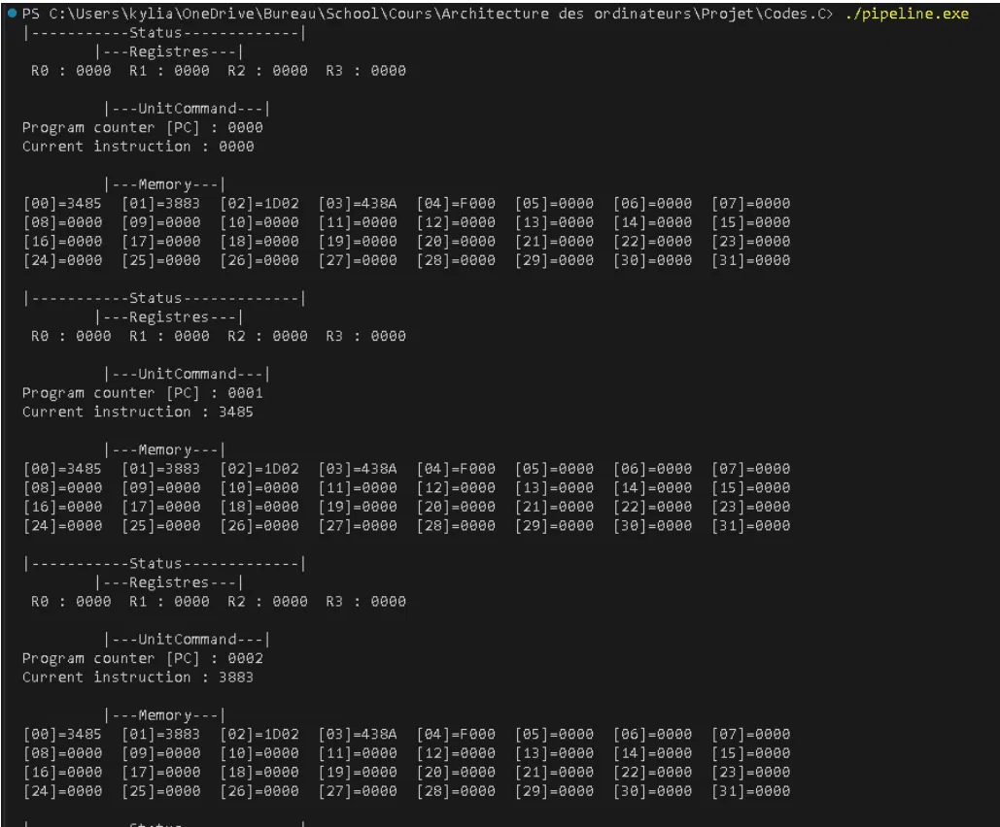

16-bit CPU Simulator
Simulating a pipelined processor, cycle by cycle, in C

Context
A computer architecture assignment: build a working simulator of a 16-bit processor in C, able to execute a small instruction set and show what happens inside the chip at every clock cycle.
The diagram above is the one we drew before writing any code. Memory, control unit, processing unit, the register bank, the ALU, and the two buses connecting them.
The problem
A processor that executes one instruction at a time is straightforward. A pipelined processor executes four at once, at different stages, and that is where it stops being simple: the instructions start interfering with each other.
Architecture
A Von Neumann design with a shared memory of 32 cells, four 16-bit working registers, an arithmetic logic unit, a program counter, and inter-stage registers carrying data between pipeline stages.
- Fetch: read the instruction at the program counter
- Decode: extract the opcode, source and destination registers
- Execute: run the operation through the ALU
- Memory and write-back: access memory, write results
The main loop calls the stages in reverse order, so that each one reads the state its predecessor left at the end of the previous cycle rather than the one being written right now.
My role
I implemented the pipeline layer: the inter-stage registers, detection of structural and data hazards, and the forwarding mechanism used to resolve dependencies between consecutive instructions.
The interesting part: hazards
Structural hazards
Fetch and the memory stage can both need the RAM in the same cycle, and there is only one memory. The fix is to stall fetch for a cycle and insert a bubble, letting the memory stage win. It costs a cycle, but it cannot be avoided in a Von Neumann design with a single shared memory.
Data hazards and forwarding
When one instruction adds two registers that the previous instruction has not finished writing yet, reading the register bank returns a stale value. Forwarding solves this by routing the result directly from the execute stage back to the instruction that needs it, before it has been written anywhere.
This is the part I found genuinely instructive. The processor is not just executing instructions; it is constantly checking whether the value it is about to read is still true.
Result
The simulator prints the full processor state at each cycle: registers, program counter, current instruction and the entire memory. Running the test program loads 5 and 3 into two registers, adds them, and stores the result at address 10.

Final state: R1 holds 5, R2 holds 3, R3 holds 8, and memory address 10 contains 8. Which is exactly what it should be.
What I took from it
- Parallelism is not free. Every stage you add creates a new way for instructions to interfere.
- Printing state at every cycle is the only realistic way to debug something with four things happening at once.
- This is the layer everything else sits on. Understanding it changes how you read higher-level code.